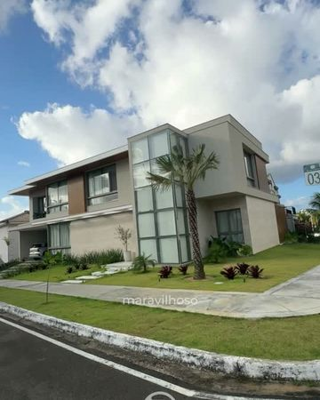

03Terça

A Experiência da Cliente
Nenhuma frase nossa diz mais do que a de quem viveu a obra com a gente. Esse é o nosso jeito de servir. Vai construir ou reformar em Natal? Fale com a gente pelo WhatsApp do perfil. #mármore #quartzito #rochasnaturais #arquiteturanatal #natalrn